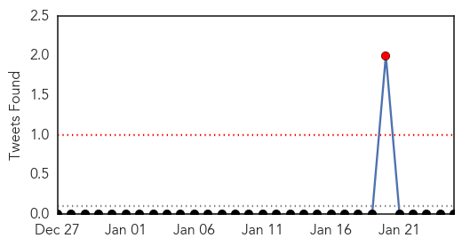
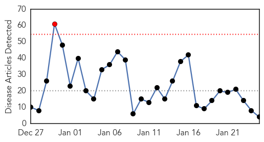
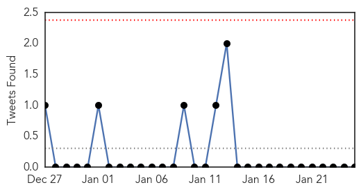

Dengue Fever
30-Day Web Trend
1 alerts, 0 warnings
30-Day Twitter Trend
1 alerts, 0 warnings

Article Locations

Article Confidences

Top Articles:
- 0.998
- California promotes mosquito bite awareness as dengue fever, chikungunya grows in Mexico and Latin America
- 0.990
- East Java declares state of emergency
- 0.842
- No infected apples case in Malaysia
- 0.831
- Millions of genetically modified mosquitoes could be released in Florida Keys
- 0.759
- Selangor gets dengue warning - Nation
- 0.671
- Genetically modified mosquitoes spark fear in Florida
- 0.669
- Selangor sets dengue record with 1,000 cases
- 0.654
- Fiji Times Online
- 0.602
- Millions of GMO mosquitoes could be set loose in Florida Keys
- 0.565
- Fear over proposal in Florida for genetically modified mosquitoes
Top Tweets:
-
No tweets found for Jan 25, 2015
Influenza
30-Day Web Trend
1 alerts, 0 warnings

30-Day Twitter Trend
0 alerts, 0 warnings

Article Locations

Article Confidences
Top Articles:
Top Tweets:
-
No tweets found for Jan 25, 2015